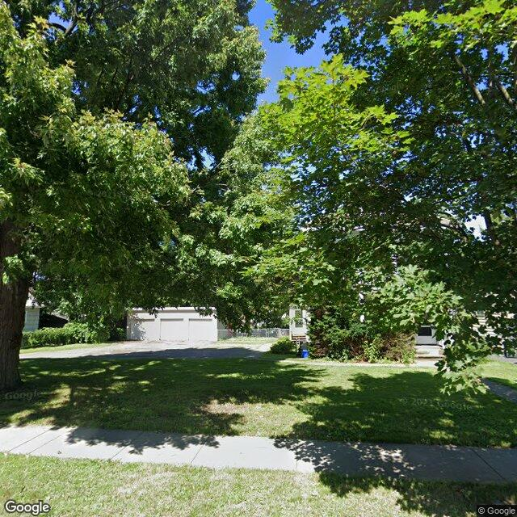

Property entry
1911 Court St
Published 2026-09-30T01:03:07+00:00
Parcel key: 004-21-040

City records
Matches use parcel IDs, normalized addresses, or nearby coordinates. Confirm a match against the source record before relying on it. Publication dates are not source-data dates.
Vacant properties 0
No matches stored for this feed. The feed or address matching may be incomplete; this is not confirmation that no records exist.
Rental registry 0
No matches stored for this feed. The feed or address matching may be incomplete; this is not confirmation that no records exist.
Code violations 0
No matches stored for this feed. The feed or address matching may be incomplete; this is not confirmation that no records exist.
Unfit properties 0
No matches stored for this feed. The feed or address matching may be incomplete; this is not confirmation that no records exist.
AI image observations (unverified)
These observations are generated from an image, not an inspection or an official code finding. No human verification is recorded here.
Image capture date: Not recorded. The entry publication date does not establish the age of the image.
Automated image description
{ "summary": "The property's exterior is largely obscured by dense tree foliage, making a comprehensive assessment of the main structure difficult.", "property_type_guess": "single_family", "visible_conditions": [ "A portion of a light-colored residential structure is visible behind dense trees.", "A detached garage structure with two bays is visible towards the rear of the property.", "The front yard appears to be a mown lawn with mature trees and some shrubs.", "A blue bin is visible near the front of the house." furlough" ], "condition_scores": { "roof": "not_visible", "siding_or_facade": "unclear", "windows_doors": "unclear", "porch_or_entry": "unclear", "yard_or_lot": "good", "trash_debris": "none_visible", "vegetation_overgrowth": "none_visible" }, "visible_flags": { "boarded_windows_or_doors": "no", "fire_damage_visible": "no", "structural_damage_visible": "no", "vacancy_signs_visible": "no", "active_construction_visible": "no" }, "possible_unrecorded_issues": [], "image_annotations": [], "needs_human_review": "true", "confidence": "low", "caveats": [ "The majority of the main structure is heavily obscured by dense tree foliage, limiting the visibility of exterior conditions.", "The image angle and obstruction make it difficult to fully assess the property." ] }
Property type guess: unclear
Visible conditions
- No items reported.
Condition scores
No structured condition scores available.
Visible flags
No structured visible flags available.
Possible image-only flags
- No items reported.
AI review boxes
- No items reported.
Review reasons
- No items reported.
Image quality
- Available
- True
- Bytes
- 145465
- Needs Rerun
- False
ACS tract context
Census Tract 3; Onondaga County; New York
- Total population
- 1606
- Median household income
- 74716
- Poverty rate
- 18.7
- Housing units
- 708
- Vacancy rate
- 6.6
- Renter-occupied share
- 64.3
- Median gross rent
- 110100
OpenStreetMap nearby
meter search radius
OpenStreetMap lookup failed: HTTP Error 406: Not Acceptable